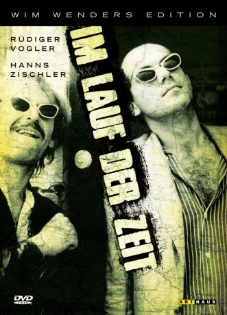
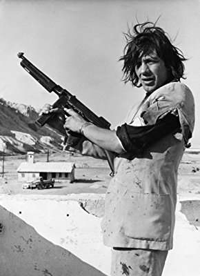

#8760 Im Lauf der Zeit
 
 IMDB-Wertung: 8.0 / 10
IMDB-Wertung: 8.0 / 10  Metascore: 0
Metascore: 0 
Seit zwei Jahren fährt Bruno in einem alten, umgebauten Möbelwagen, der ihm auch als Unterkunft dient, durch die kleinen Orte entlang der Grenze zur DDR und repariert in den aussterbenden lokalen Kinos die Projektoren. Eines Morgens beobachtet er, wie ein Mann mit seinem VW in die Elbe rast. Der Mann, Robert Lander, klettert mit seinem Koffer aus dem versinkenden Auto und schwimmt an Land. Bruno nimmt ihn in seinem Möbelwagen mit, und es beginnt eine Reise, die beide durch ein provinzielles, ungesehenes Deutschland führt. So wenig die Orte und Menschen, denen Bruno und Robert begegnen, gängigen Deutschlandbildern entsprechen, so sehr haben sie immer wieder mit dem Kino zu tun.
Jahr: 1976
Dauer: 176 Minuten
FSK: 6
Land: West-Deutschland Studio: Arthaus FilmverleihTonspuren:
Untertitel: Deutsch,
Auflösung: 1080p (1792x1080) Größe: 14540 MB
Genre: Drama
Regisseur:  Wim Wenders
Wim Wenders
Drehbuch: Wim Wenders
Soundtrack: Axel Linstädt
Darsteller:
- Rüdiger Vogler als Bruno Winter
- Hanns Zischler als Robert Lander
- Lisa Kreuzer als Pauline, cashier
- Rudolf Schündler als Robert's Father
-  Marquard Bohm als Man Who Lost His Wife
- Wim Wenders als Spectator at Pauline's Theater
- Hans Dieter Trayer als Paul, garage owner
- Franziska Stömmer als Cinema owner
- Patric Kreuzer als Little boy
- Peter Kaiser als Movie presenter (uncredited)
- Michael Wiedemann als Teacher (uncredited)
Datei: X:\1976\Im Lauf der Zeit (1976, FSK6, 1792x1080).mkv seit 27.04.2018
Festplatte: HD 1971-1979
 Es gibt insgesamt 31 Filme in der Gruppe '1976'
Es gibt insgesamt 31 Filme in der Gruppe '1976'